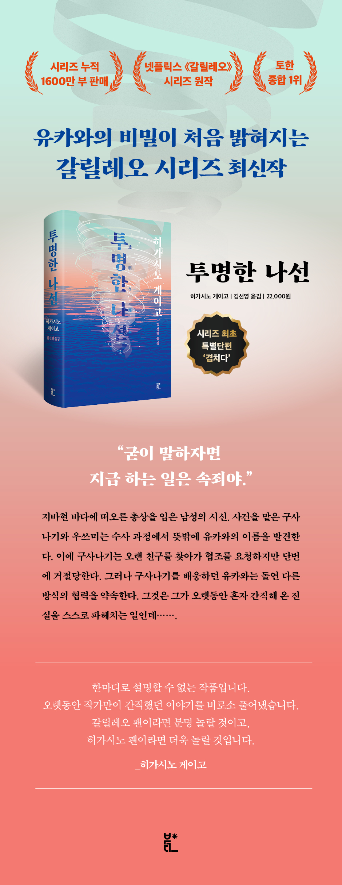

예스24 리스트
제목 : 투명한 나선
책 소개
유카와의 비밀이 처음 밝혀지는 갈릴레오 시리즈 최신작 “굳이 말하자면 지금 하는 일은 속죄야.”
‘오늘의 일본을 대표하는 작가’, ‘동아시아에서 가장 사랑받는 미스터리 작가’, ‘한국인이 제일 좋아하는 일본 장르소설 작가’ 히가시노 게이고의 장편소설 『투명한 나선』이 종합 출판 브랜드 북다에서 출간되었다. 1985년 『방과 후』로 데뷔한 히가시노 게이고는 『비밀』을 시작으로 『용의자 X의 헌신』, 『백야행』, 『나미야 잡화점의 기적』, 『녹나무의 파수꾼』, 『가공범』 등 수많은 베스트셀러를 발표하며 누구도 넘볼 수 없는 위상을 정립했다. 40여 년 동안 100권이 넘는 작품을 발표한 작가는 본격 미스터리는 물론 휴먼, SF, 스릴러, 사회파 미스터리 등 장르를 가리지 않고 왕성하게 활동 중이다. 그의 작품들은 각종 영화, 드라마, 게임 등으로 만들어졌고, 우리나라에서도 『백야행』과 『용의자 X의 헌신』, 『방황하는 칼날』이 영화화되었다. 그중 ‘갈릴레오’는 화제성, 완성도, 판매량 모두에서 작가의 대표 시리즈라 칭할 만하다.
1996년 일본에서 처음 연재되어 2026년 30주년을 맞이한 이 시리즈의 열 번째 작품인 『투명한 나선』은 2021년 일본 출간 즉시 토한 종합 1위를 비롯하여 각종 서점 베스트셀러 랭킹되며 여전한 인기를 증명했다. 그동안 베일에 싸여 있던 주인공 유카와 마나부의 비밀이 처음 밝혀지는 『투명한 나선』은 갈릴레오 시리즈의 새로운 전환점이 되는 작품이다.
『투명한 나선』은 전작들의 구성과 장점은 그대로 가져가면서도 유카와의 과거와 비밀을 공개함으로써 유카와 마나부의 인간적인 면모를 깊이 있게 그려 냈다. 작중 유카와의 대사인 “자네는 나에 대해 아무것도 몰라”는 작가가 독자에게 하고 싶었던 말인지도 모른다. 이 작품을 우리말로 옮긴 김선영 역자는 “우리가 그동안 보아 왔던 것은 어쩌면 천재 물리학자의 기나긴 사춘기 시절이었을지도 모른다”라며 『투명한 나선』은 “인간 ‘유카와 마나부’를 마침내 발견해 낸 작품”으로서 독보적인 존재감을 갖는다고 전했다. 긴 세월 뚝심 있게 자신의 관점과 논리를 견지해 온 유카와 마나부. 이 책으로 그에 대한 독자들의 사랑은 몇 겹 더 두터워지리라 확신한다.
이미지

작가정보
일본 최고의 베스트셀러 작가. 1958년 오사카 출생. 오사카 부립 대학 졸업 후 엔지니어로 일했다. 1985년 《방과 후》로 제31회 에도가와란포상을 수상하면서 작가로 데뷔하였다. 1999년 《비밀》로 제52회 일본추리작가협회상, 2006년 《용의자 X의 헌신》으로 제134회 나오키상과 제6회 본격미스터리대상 소설부문상, 2012년 《나미야 잡화점의 기적》으로 제7회 중앙공론문예상, 2013년 《몽환화》로 제26회 시바타렌자부로상, 2014년 《기도의 막이 내릴 때》로 제48회 요시카와에이지 문학상을 수상했다. 주요 작품으로는 《동급생》 《라플라스의 마녀》 《가면산장 살인사건》 《몽환화》 《위험한 비너스》 《눈보라 체이스》 《연애의 행방》 《녹나무의 파수꾼》 《숙명》 등이 있으며, 그 외에도 동화 《마더 크리스마스》, 에세이 《히가시노 게이고의 무한도전》을 출간하였다. 2026년 7월 23일 향년 68세 대장암으로 별세하였다.